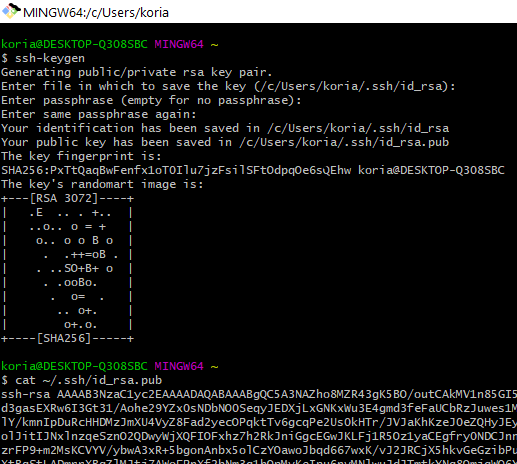

Base
git config --global user.name blabla - глобальне імя користувача.
git config --global user.email blabal@bla - глобальний емейл користувача.
git init - створює новий локальний репозиторій.
git status - перегляд статуса файлів у робочому каталозі.
git add - додає файл до робочого.
git commit - виконує коміт зміни та вказуємо що потрібний комміт потрібно зберегти + запис коментаря змін в репозиторій.
git log - відображає історію комітів.
git checkout - використовується для перемикання між гілками.
git branch - команда для управління гілками.
git push - використовується для вивантаження вмісту локального сховища в віддалений репозиторій.
git pull - скачує зміни з віддаленого репозиторію до локального каталогу.
git merge - об'єднує кілька комітів в загальну історію.
git clone - команда для копіювання репозиторію.
Що таке.gitignore файл?
.gitignore - це файл за допомогою якого можна приховувати файли і папки
Advanced
git revert - відміна комітів.
git reset - відміна змін та комітів.
git rebase - перенесення змін з одної гілки в іншу.
git cherry-pick - перенесення виділених комітів із одного місця репозиторію в інший.
git stash - призначена для збереження поточних змін в окреме хранилеще.
SSH
